每个结点最多两个孩子，而且分左右。
一条主线：递归的结构，用递归的算法。
二叉树由结点的有限集合构成：或者为空， 或者由一个根结点和两棵不相交的左、右子树组成。
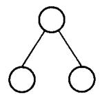
这是一个递归定义——后面几乎所有算法都直接照着它写。
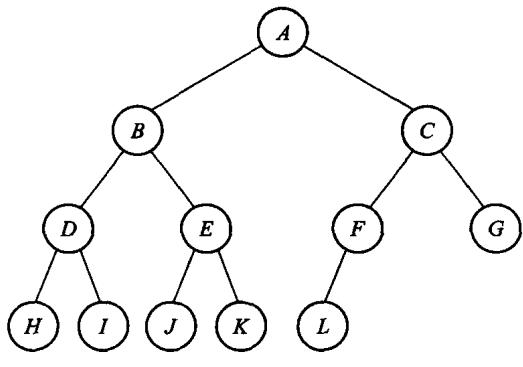
完全二叉树这个条件看着别扭，但它换来一件大事——见 5.3 节。
性质 3：叶结点数 n0 = 度为 2 的结点数 n2 加 1。
证明：设结点总数 n=n0+n1+n2。 换个角度数边：除根外每个结点恰有一条边进入，所以 e=n−1； 而边都从度 1 或 2 的结点射出，所以 e=n1+2n2。 两式合并即得 n0=n2+1。
性质 4（满二叉树定理）：非空满二叉树的树叶数 = 分支结点数 + 1。
满二叉树里 n1=0，由性质 3 直接得出。
满二叉树定理推论：非空二叉树的空子树数目 = 结点数 + 1。
证明：把所有空子树换成树叶，得到扩充二叉树 T'。 T 原来的每个结点在 T' 里都成了分支结点。 由满二叉树定理，T' 的树叶数 = 分支数 + 1 = T 的结点数 + 1。 每片新叶恰对应 T 的一棵空子树。
这不是纸面游戏：链式存储时这些空指针占的空间和结点本身同阶。 线索二叉树、Trie 压缩、第 12 章 PATRICIA 的动机都从这里来。
访问根、走左子树、走右子树——三件事的次序决定了三种周游：
| 次序 | 名字 |
|---|---|
| 根 左 右 | 前序(preorder) |
| 左 根 右 | 中序(inorder) |
| 左 右 根 | 后序(postorder) |
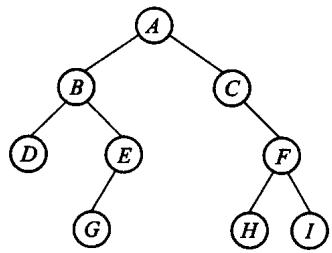
template <typename Visitor>
static void preorder_impl(const Node* node, Visitor& visit) {
if (node == nullptr) return;
visit(node->value); // 根
preorder_impl(node->left, visit); // 左
preorder_impl(node->right, visit); // 右
}template <typename Visitor>
static void inorder_impl(const Node* node, Visitor& visit) {
if (node == nullptr) return;
inorder_impl(node->left, visit); // 左
visit(node->value); // 根
inorder_impl(node->right, visit); // 右
}形状和定义一样，一眼就能对上——这正是递归在这一章的价值。
深度优先靠栈（这里是递归用的运行栈），广度优先靠队列。
把根入队
只要队列非空:
出队一个结点, 访问它
它的左孩子入队
它的右孩子入队对图 5.5 那棵树，得到的次序是逐层从左到右。
完整实现在 code/ch05/binary_tree/teaching.hpp 的 level_order—— 里面那条极简链式队列是现写的，因为第 3 章讲过了。
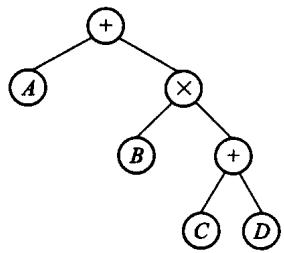
| 周游 | 得到 |
|---|---|
| 前序 | 前缀表达式（波兰式） |
| 中序 | 中缀表达式（缺括号） |
| 后序 | 后缀表达式（逆波兰式） |
第 3 章那个后缀求值器，吃的就是这棵树后序周游的结果。
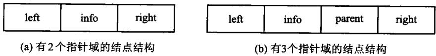
一个数据域、两根链接。没有孩子就是 nullptr—— 比原书用一个「空结点」表示要省事得多。
// 造一棵新树：一个根，接上左右两棵子树。
// 两棵子树的所有权**转移**给新树——传进来的那两棵随即变空，
// 否则同一批结点会被两棵树各删一次。
void create_tree(const T& value, BinaryTree& left, BinaryTree& right) {
Node* fresh = new Node{value, left.root_, right.root_};
left.root_ = nullptr;
right.root_ = nullptr;
clear();
root_ = fresh;
}// 【代码5.8】后序释放：**必须先删两个孩子，再删自己**。
// 反过来先 delete node，node->left 就成了读已释放内存。
static void destroy(Node* node) {
if (node == nullptr) {
return;
}
destroy(node->left);
destroy(node->right);
delete node;
}
static void destroy(Node* node) {
if (node == nullptr) return;
destroy(node->left);
destroy(node->right);
delete node;
}先删两个孩子，再删自己。 反过来先 delete node， node->left 就成了读已释放的内存。
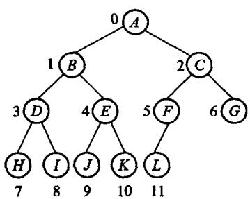
按层次次序编号后，父子关系变成下标算术：
下标 i 的左孩子 2i + 1
下标 i 的右孩子 2i + 2
下标 i 的父亲 (i - 1) / 2 (i > 0)一根指针都不用。 但只对完全二叉树成立—— 非完全二叉树这么存会留下大量空洞。
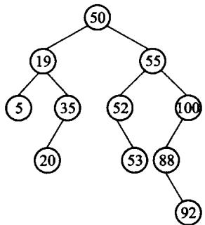
约束只有一条：左子树的键都小于根，右子树的都大于根。
有了它，查找不必遍历全树——每比较一次就砍掉一半（前提是树平衡）。
中序周游一棵 BST，得到的正是升序——这是「左小右大」的直接推论。
// 【算法5.9】插入。一路比较着往下走，走到空位就把新结点挂上去。
// 键已存在时返回 false——重复键是可预期状态，不是错误，所以不抛异常。
bool insert(const T& value) {
Node** link = &root_; // 指向「新结点该挂在哪根指针上」
while (*link != nullptr) {
if (value < (*link)->value) {
link = &(*link)->left;
} else if ((*link)->value < value) {
link = &(*link)->right;
} else {
return false; // 已经有了
}
}
*link = new Node{value, nullptr, nullptr};
return true;
}Node** link 指向「新结点该挂在哪根指针上」， 于是「挂到根」和「挂到某个孩子」写成同一句 *link = new Node{...}。
空树不必另开一个分支。
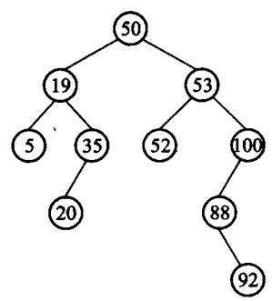
被删结点有两个孩子时，谁来顶替？
中序前驱——左子树里最大的那个。它比左子树其余的都大、 比右子树全部都小，顶上来之后「左小右大」仍然成立。
被删结点有两个孩子时，用中序前驱顶替。但——
中序前驱自己可能还有一个左孩子。
被删 50, 它的中序前驱是 45, 而 45 还带着一个左孩子 42
顶替之前必须先把 42 接走:
*predecessor_link = replacement->left;漏了这一句，40 的右链仍指向 45，而 45 已经成了根——树上出现环。 中序周游立刻无限递归，ASan 报栈溢出。
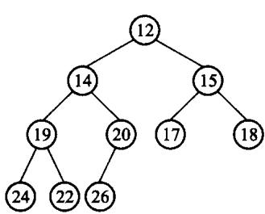
因为完全，可以压进数组；因为堆序，根就是最小值。 堆序只管父子，不管兄弟——这是它比 BST 弱、也比 BST 便宜的地方。
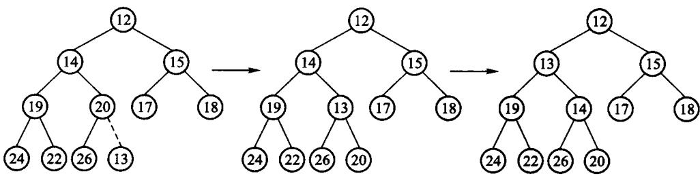
// 上浮：只要比父亲小就换上去。
void sift_up(size_type index) {
while (index > 0) {
size_type parent = (index - 1) / 2;
if (!(data_[index] < data_[parent])) {
break; // 已经不小于父亲，位置对了
}
T tmp = data_[index];
data_[index] = data_[parent];
data_[parent] = tmp;
index = parent;
}
}只要比父亲小就换上去。树高 log n，所以代价 O(log n)。
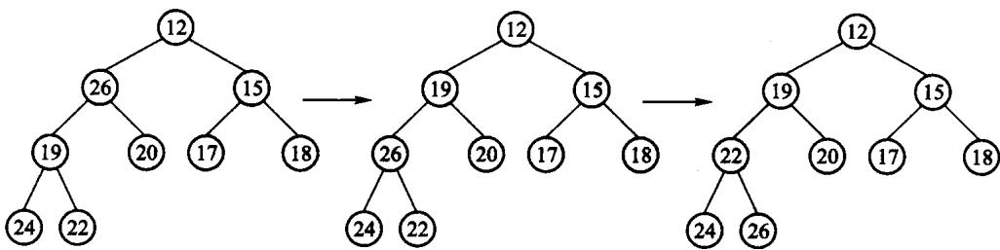
// 下沉：和两个孩子里较小的那个比，比它大就换下去。
// **必须和较小的那个换**——跟较大的换会破坏「父亲不大于两个孩子」。
void sift_down(size_type index) {
for (;;) {
size_type left = index * 2 + 1;
size_type right = left + 1;
size_type smallest = index;
if (left < size_ && data_[left] < data_[smallest]) {
smallest = left;
}
if (right < size_ && data_[right] < data_[smallest]) {
smallest = right;
}
if (smallest == index) {
return; // 父亲已经最小，停
}
T tmp = data_[index];
data_[index] = data_[smallest];
data_[smallest] = tmp;
index = smallest;
}
}必须和两个孩子里较小的那个交换——跟较大的换会破坏堆序。
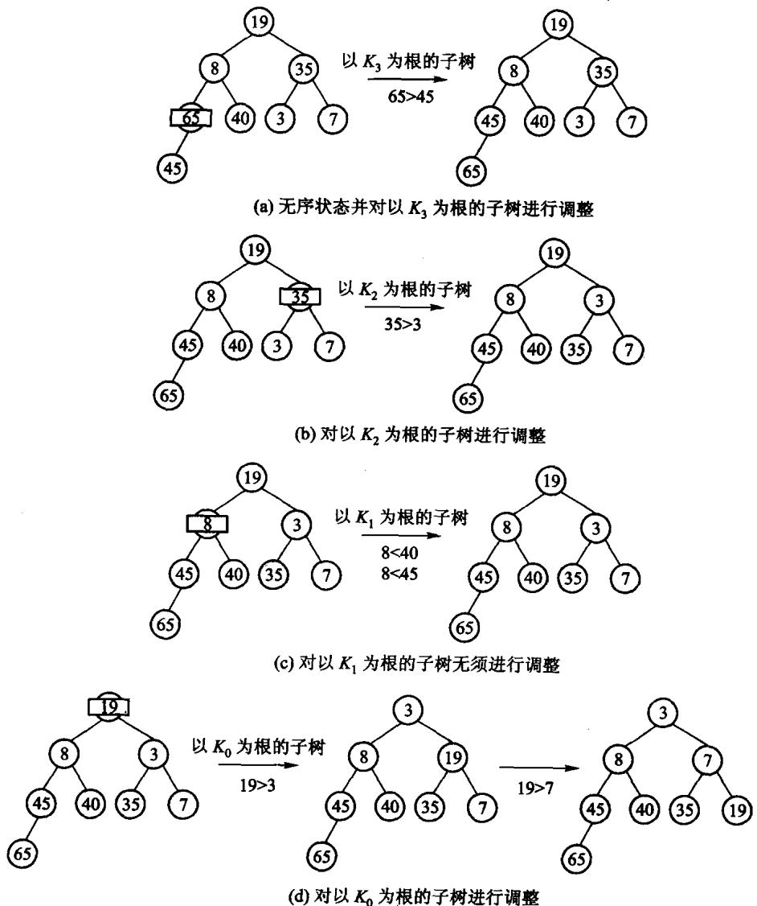
粗算：n/2 次 sift_down × O(log n)=O(n log n)。原书说这只是粗略上界。
细算的关键：下沉距离不是 log n，是「离底层还有多远」。 越靠底层的结点越多，能沉的距离越短——两者正好抵消。
先把堆放大成一棵满二叉树（高度同为 h=⌊log2n⌋，结点数 ≥n， 每层排满），在它上面算出来的就是上界——一般的 n 下堆的最后一层未必满， 不能直接把「共 log n 层」当等式用。
满树第 i 层恰有 2i 个结点，最多下沉 h−i 层：
（令 j=h−i；末两步用 ∑j≥0j/2j=2 与 2h≤n。）
所以建堆是 O(n)——线性时间就能把无序序列变成堆。
优先队列只保证“下一项最优”，不要求所有元素始终有序。
| 表示 | 插入 | 查看最小 | 删除最小 |
|---|---|---|---|
| 无序表 | O(1) | O(n) | O(n) |
| 有序表 | O(n) | O(1) | O(1) |
| 最小堆 | O(log n) | O(1) | O(log n) |
本书 MinHeap<T> 就是最小优先队列： insert 入队，remove_min 取最高优先级，空队列返回 nullopt。
Huffman、Dijkstra、Prim 都只反复需要“当前最小”，无需全排序。
规则只有一句：反复取出权最小的两棵树，合并成一棵放回去，直到只剩一棵。
「取最小的」正是堆的拿手好戏——两节内容在这里接上了。
| 做法 | 每轮取最小 | 总代价 |
|---|---|---|
| 线性扫描 | O(n) | O(n2) |
| 最小堆 | O(log n) | O(n log n) |
以权 2、3、4、7 为例，合并过程 2+3=5 → 4+5=9 → 7+9=16：
Huffman 树让这个数最小——权大的离根近，编码就短。
传电文 abbaaadc。定长编码每字符 2 位，共 16 位。
想更短就让高频字符用短码。比如 a=0, b=1, c=01, d=10 → 10 位。
但这样的电文没法译码：收到 011，既可以读成 a b b，也可以读成 c b。
症结：0 是 01 的前缀。要求任何编码都不是另一个的前缀——前缀码。
左边标 0、右边标 1，从根走到叶子，一路的 0/1 就是那个字符的编码。
| 字符 | 频率 | 编码 | 位数 |
|---|---|---|---|
| a | 4 | 0 |
1 |
| b | 2 | 10 |
2 |
| c | 1 | 110 |
3 |
| d | 1 | 111 |
3 |
为什么一定无冲突：字符只住在叶子上， 而一个叶子不可能在另一个叶子的路径上。
abbaaadc 编成 14 位，比定长的 16 位短。
14 正好是这棵树的 WPL——这不是巧合： WPL 是 ∑(权×深度)，而权就是出现次数、深度就是码长。
一个反直觉的推论：所有字符频率相同时，Huffman 一位都省不下来。 8 个等权字符建出的是平衡树，每个恰好 3 位——退化成定长编码。
从根出发
读一位: 0 走左, 1 走右
走到叶子: 吐出这个字符, 回到根, 继续读前缀码保证这个过程没有歧义——不会出现「读到一半不知道该停还是该继续」。
三处边界，测试各有一条用例：
optional，不吐半个字符"0"visit 那一行的位置；广度优先必须用队列python3 tools/check_code.py code/ch05/binary_tree
python3 tools/check_code.py code/ch05/heap_huffman故意改坏一处，看哪条断言变红：
destroy 改成先删自己再删孩子sift_down 改成和较大的孩子交换最后一条会让 WPL 变大——测试里那个
30就是为它准备的。
放映快捷键
→ / 空格下一页 ←上一页 Home / End首尾
N演讲者备注 O缩略图总览 F全屏 D深色
?这张帮助 Esc关闭
导出 PDF：浏览器打印（Ctrl/Cmd+P），每页一张幻灯片。